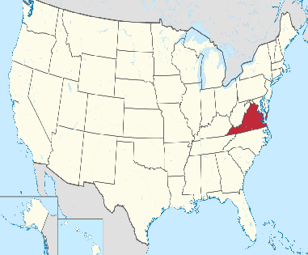
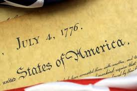
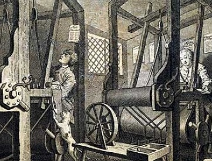
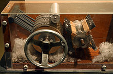
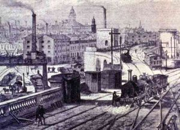
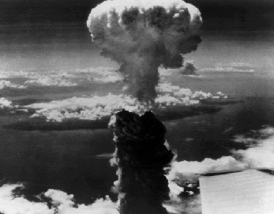
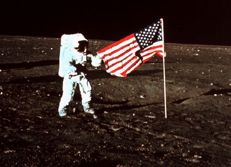
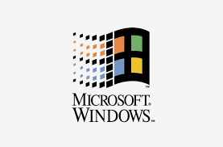
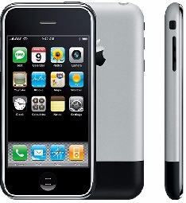

Introducción: propósito general
Cuando nos preguntamos por los países que lideran el mundo de la tecnología actualmente suelen encabezar dichas listas algunos países asiáticos, tal vez uno euroepeo o uno americano. Pero cuando nos preguntamos por un país que tiene un impacto a nivel global constante debido a la tecnología, es indudable que el puntero de este ranking será Estados Unidos. Y esto no es mera casualidad, de acuerdo con la BBC, tres de las cinco ciudades más desarroladas tecnológicamente son de dicho país. Además, de la mano con la cultura se ha formado una ideología que ayuda a reforzar esta idea: películas de jóvenes que tienen ideas brillantes y las convierten en empresas multimillonarias, gobiernos que envían vehículos de exploración al espacio, medios no físicos que permiten mantener en contacto a millones de personas a cientos de kilómetros de distancia, etc...
Listo, ya está claro que el rey absoluto es Estados Unidos. Pero ahora, reflexionen lo siguiente: ¿desde qué momento se considera a Estados Unidos un país de tal calibre en el ámbito de la tecnología? De pronto se posicionó allí repentinamente como aquellos países asiáticos que dieron lo que se conoce como 'el salto del tigre'. Tal vez fue debido a eventos más graduales y lentos, o simplemente siempre ha sido así. Considero que la verdadera razón es la segunda, fue una sucesión de eventos a lo largo de varios siglos los que permitieron que Estados Unidos predomine sobre los demás en el campo 'tech'. Los invito a realizar el recorrido histórico que permite entender cómo desde la Colonia, en el siglo XVII, se empezaron a dar situaciones que poco a poco fueron favoreciendo el progreso científico que a la postre culminarían en lo que es Estados Unidos a la fecha.
1600 aprox. Llegan ingleses a norteamérica
A partir de principios del siglo 17, empiezan a llegar los primeros ingleses a tierra norteamericana. Se tiene registro del primer asentamiento exitoso de los ingleses en América, el cual fue en lo que hoy conocemos como Virginia. Claramente el primer asentamiento debía ser en la costa este pues los trayectos realizados por los ingleses eran a través del oceáno atlántico.
Migración Inglesa
Norteamérica empieza a ser vista como una tierra de oportunidades para los europeos, principalmente para los ingleses, puesto que allí la libertad religiosa era casi nula y la diferencia de clases era bastante notoría, por lo que en búsqueda del bienestar, religoso o económico, cientos de ingleses empezaron a migrar a norteamérica, entre estos personas con conocimientos técnicos como manufactureros o artesanos.
1787, Promoción del progreso científico
El documento formal que declaraba la independecia de las trece colonias inglesas poseía contenido que alentaban el progreso científico en términos de propiedad intelectual. En ese orden de ideas, el Congreso estaba capacitado "para promover el progreso de la ciencia y las artes útiles, asegurando por tiempo limitado a los autores e inventores el derecho exclusivo sobre sus respectivos escritos y descubrimientos".
1790 aprox. De la manufactura a la industrialización
Tras la Independencia se empieza a dar el paso de la producción artesanal a la industrial. Esto se da gracias a a los vastos recursos naturales que poseía norteamérica. Además, se empieza a generar un relaciones económicas con Inglaterra por lo que empiezan a llegar maquinaria.
Desarrollo autónomo de maquinaria
Empiezan a aparecer distintos dispositivos que facilitan alguna tarea dispendiosa en aquella época que dan muestra de la capacidad de ingeniería que ha ganado Estados Unidos. Algunos de estos son el molino de harina desarrollado por Oliver Evans, la separadora de semillas del algodón por Eli Whitney o la famosa máquina de vapor. Al darse cuenta que el desarrollo de este tipo de artefactos facilitan el proceso de producción y no solo eso sino que también reducen en un gran porcentaje el costo de producción, se empieza a potenciar el desarrollo de nuevas máquinas.
1850 aprox. Crecimiento Industrial
La industrialización continúa ahora con más fuerza. La gran cantidad de mano de obra permite el desarrollo de más industrias y maquinaria. La máquina icónica de esta segunda etapa de industrialización es el ferrocarril, que permite transportar con mayor facilidad los recursos o la mercancia a través del país. Parte del éxito de la creación de tantas máquinas propias del país fue que al estar tan lejos de los países europeos, solo podían guiarse de la teoría y así realizar las máquinas a su manera.
1900
Este siglo es el que mayor auge tiene con respecto a la producción de nuevas máquinas, específicamente tecnológicas. Los usos de estas ya no se limitan al mero comercio sino que expanden sus fronteros a otros campos de la vida humana. Todos los productos mencionados a continuación fueron hechos en Estados Unidos durante este siglo.
1911 aprox. Fundación IBM
Se usa por primera vez en la historia del mundo, como método de intmidación y demostración del poder tecnológico, la bomba atómica, específicamente Litte Boy y Fat Man contra Japón durante la Segunda Guerra Mundial.
1945 aprox. Fat Man y Little Boy
Se usa por primera vez en la historia del mundo, como método de intmidación y demostración del poder tecnológico, la bomba atómica, específicamente Litte Boy y Fat Man contra Japón durante la Segunda Guerra Mundial.
1969. Apollo 12
El gobierno envía un vehículo al espacio con el objetivo de aterrizar en la luna y así 'conquistarla'.
1969 aprox. Primera conexión entre computadores por Internet
1975 aprox. Fundación Microsoft
Se funda la empresa Microsoft Corporation. Hoy dueña del sistema operativo que predomina los computadores en el mundo entero: Windows.
1977. Apple II
La empresa Apple lanza de los primeros computadores que se comercializan a gran escala debido a su fácil uso comparado con los anteriores. A partir de este momento empieza una lucha feroz entre distintas compañías por entregar los mejores productos al público. Su más célebre computador lanzado por esa época fue el Apple II con un costo de 1200 dólares.

1998. Google
Se funda la empresa Google Inc, inicialmente con el propósito de organizar la información de la web (intenet). Efecetivamente esa meta se cumplió, a pesar de que no manejan el 100% de la información web, sí manejan al rededor de 850 TeraBytes en su buscador únicamente.

2001. SpaceX
En dicho año se funda esta empresa con el propósito de reactivar el interés por la exploración espacial. Liderada por Elon Musk, SpaceX superó la barrera de los altísimos precios de los materiales fabricándolos por sí mismos. Se dan varios lanzamientos de cohetes con distintos propósitos de llegar al espacio, pero solo hasta el 2015 empiezan a ganar notoriedad pública.

2004. Facebook
Se crea la red social Facebook que en principio buscaba conectar los miembros de la Universidad de Harvard, pero fue tal el éxito de dicha página que hoy día más de 1350 millones de miembros. Actualmente es uno de los principales medios de comunicación.

2007. iPhone
A pesar de que la existencia de los teléfonos móbiles viene desde hace varios años atrás, este producto de Apple es de los primeros que empiezan a venderse a gran escala cambiando el paradigma de celular que se tenía de teclas y pequeña pantaña a sin teclas y gran pantalla. Cambio radical. Permite que millones de personas se comunican fácilmente.
2012. Realidad Virtual - Oculus Rift
Oculus Rift son el primer prototipo de gafas que simulan una realidad virtual. Este tipo de tecnología ha venido ganando fuerza y acepetación entre el público general a lo largo de los últimos años para ganar campo no solo en el entretenimiento, sino también en ámbitos académicos y científicos.
Conclusión
Efectivamente el éxito tecnológico de los Estados Unidos no está determinado por el azar sino más bien por una serie de factores históricos en los que se tomaron las decisiones correctas, en el sentido en que iban orientadas hacia el desarrollo cienetífico y más tarde tecnológico. Facotres como la llegada de los artesanos con sus conocimientos técnicos de distintas materias hasta el apoyo a los derechos de autor en la creación de artefactos desde los comienzos de la Indepencia estimulan el pensamiento científico. La falta de mayores prohibiciones frente a la distribución de conocimientos y la libertad de religiosidad fue otro factor que propulsó el desarrollo científico, a diferencia de, muchos años después, países en América Latina en los cuales el progreso de tal campo fue más lento debido a la estricta prohibición de libre pensamiento.
Otro aspecto clave, según Andrés Oppenheimer, experto escritor y periodista, la constante aparación de proyectos exitosos se basa en que existen ambientes que favorecen la creatividad, desarrollo de ideas de calidad y trabajo en equipo de los mejores calificados para el tema, todo de la mano de la tecnología. Inclusive esos espacios llegan a ser del tamaño de ciudades, tomando el ejemplo de Sillicon Valley.
Como se pudo ver en la línea de tiempo, las principales tecnologías que usamos a diario fueron desarrolladas o potenciadas por Estados Unidos: Internet, redes sociales, teléfonos móbiles o buscadores de información. La importancia que se le atribuye a estas recientes invenciones y el clave rol que juegan en el día a día del ser humano del siglo XXI son prueba de que "El Grande de Norte América" es tecnológicamente influyente hacia las demás naciones.
A manera de reflexión final, la dinámica de Estados Unidos, desde sus inicios como nación, se ha basado en el siguiente principio: tecnología implica adelanto, adelanto implica conquista.
Muchas gracias.